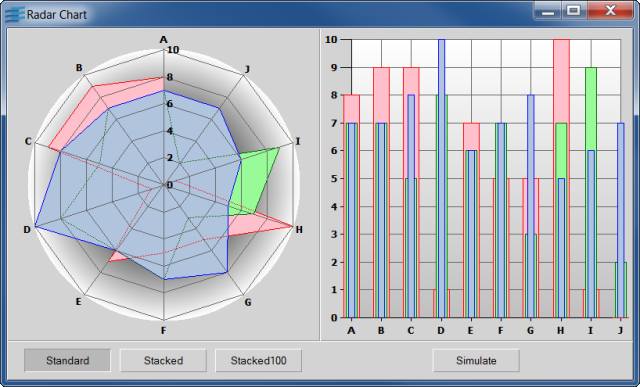

radarShows you how to create a Radar Chart.

This sample shows you how to use the IlvRadarChart class to
create a Radar Chart that displays the values of several data sets.
These data sets are also displayed by a Cartesian chart, which
demonstrates the ability to share data sets between several graphic
representations.
The following interactions are available on the chart:
Three buttons (labeled Standard, Stacked and
Stacked100) let you change the displayers used to display the data
sets. The Radar chart uses filled-area displayers
(IlvPolygonChartDisplayer and
IlvStackedPolygonChartDisplayer) whereas the Cartesian
chart uses bar displayers (IlvBarChartDisplayer and
IlvStackedBarChartDisplayer).
The Simulate button launches a timer that randomly changes values in the data sets. Notice that both charts are automatically updated whenever a value changes.
IlvRadarChartIlvChartInteractorIlvPolylineChartDisplayerIlvPolygonChartDisplayerIlvStackedPolygonChartDisplayerIlvBarChartDisplayerIlvStackedBarChartDisplayer